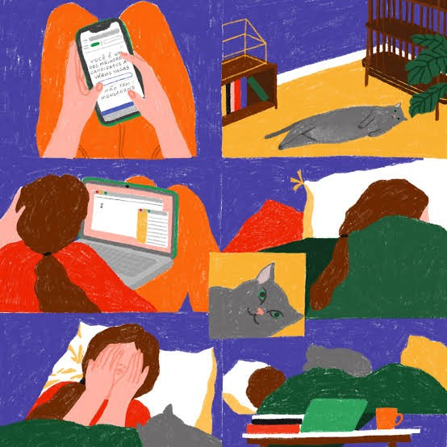

Incalma

Designer e ilustradora portuguesa. Entusiasta de ficção científica e amante de pássaros. Jogadora ocasional de xadrez, gamer de coração e produtora a tempo inteiro de jingles de coisas do dia a dia. Amadora em tudo, exceto no trabalho (caso sejas um cliente a ler isto).
Estudei Design de Comunicação na Faculdade de Belas Artes da Universidade do Porto e frequentei um programa de Ilustração e Narrativa Visual na AKV St. Joost, em Den Bosch, nos Países Baixos. Na última década tenho trabalhado em Ilustração, Animação e Cerâmica, bem como em Design Gráfico, Editorial e Web. Atualmente frequento o Mestrado em Estudos Literários, Culturais e Interartísticos na Faculdade de Letras da Universidade do Porto.
Co-edito e coescrevo a revista aguça, que fundei (2021-), e fundei a asteróide fértil, Associação Cultural (2023-) e o estúdio minúsculo (2025-).
Ilustração e design · Porto